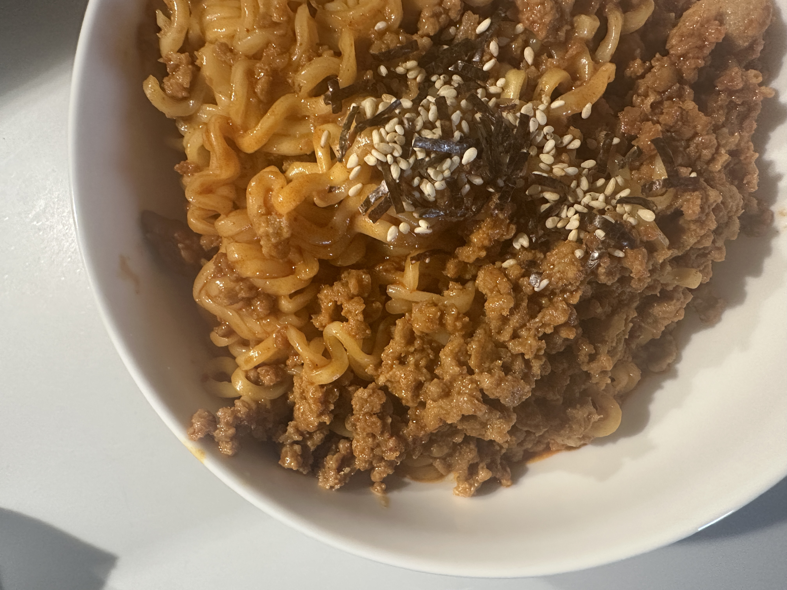

Home
Spicy pork noodles

Description
A super spicy and satisfying noodle dish
Ingredients
- 100g minced pork
- 1 pack buldak ramen
- 1/4 cup milk
- 1/2 tbsp gochujang
- 1 tbsp soy sauce
- 1/2 tsp sugar
- 1 tsp white pepper
Steps
- Mix minced pork with soy sauce, sugar, white pepper and gochujang
- Boil buldak noodles, drain and set aside
- Cook the pork until browned
- Lower the heat, pour in milk and add the Buldak seasoning packet
- Toss in the cooked noodles and mix well. Enjoy while hot!